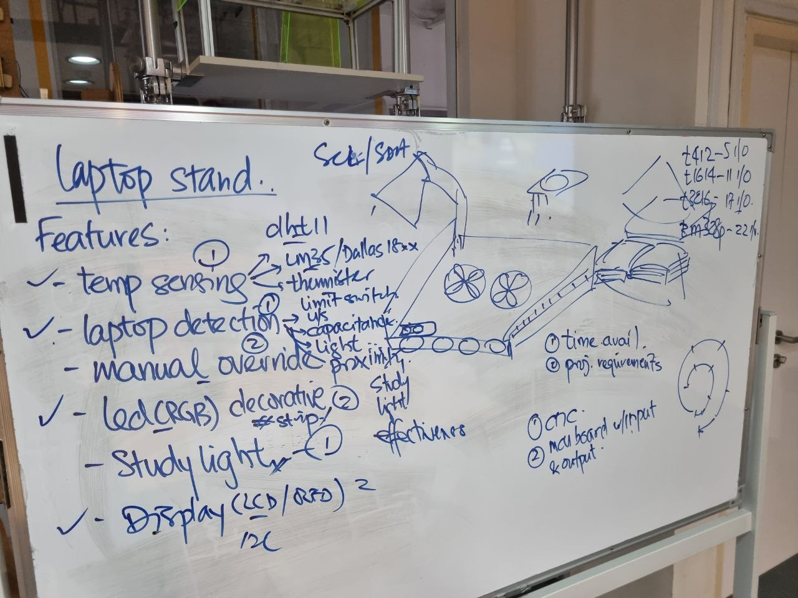
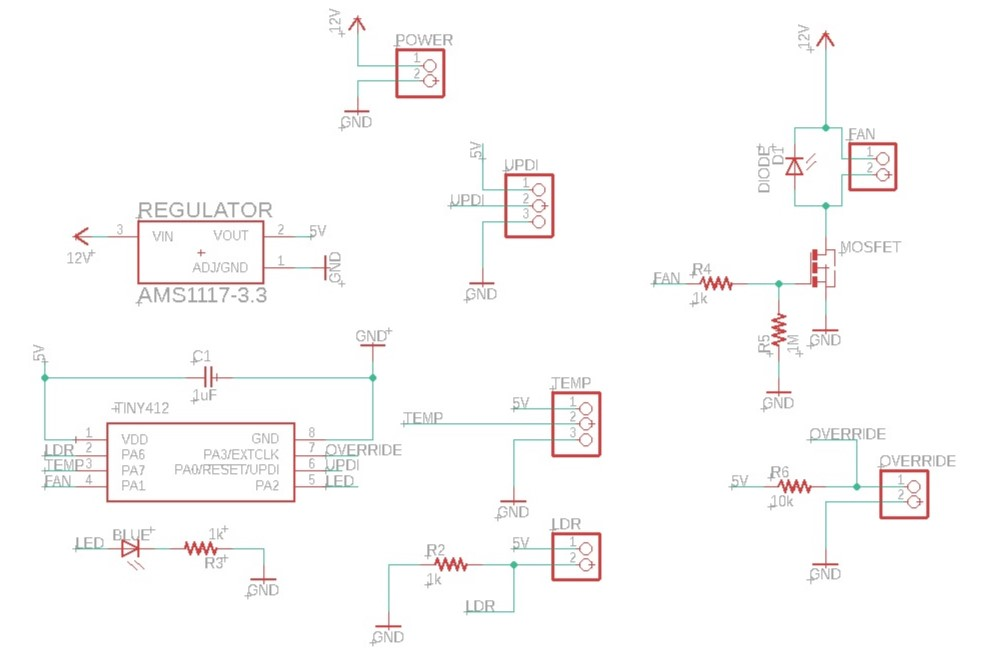
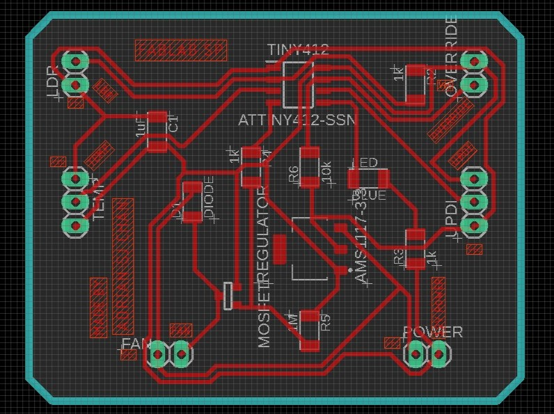
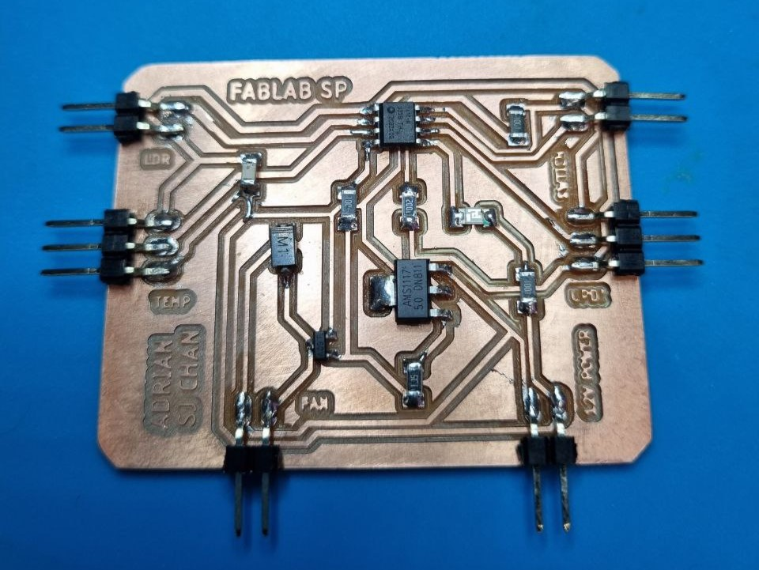
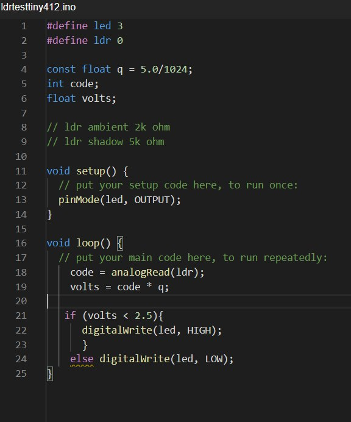
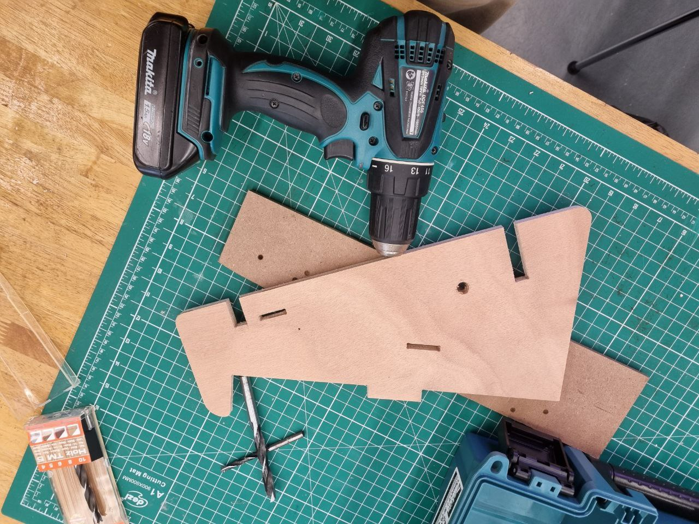
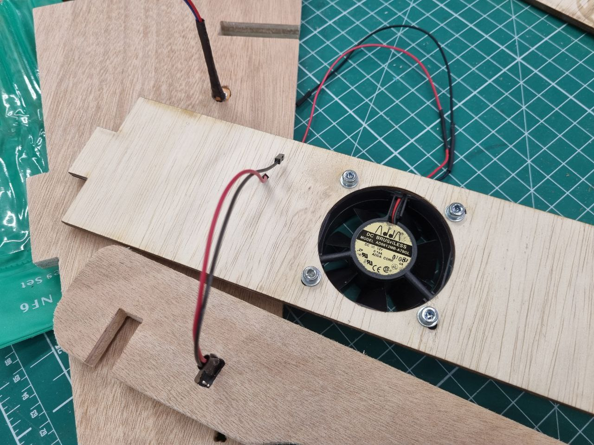
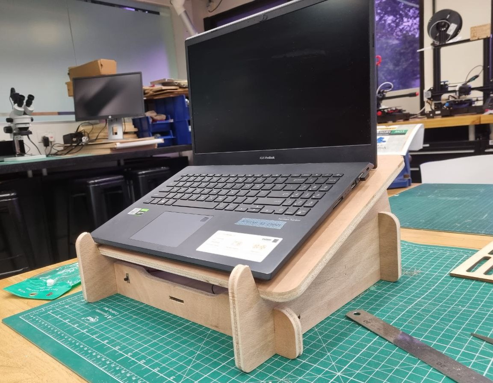
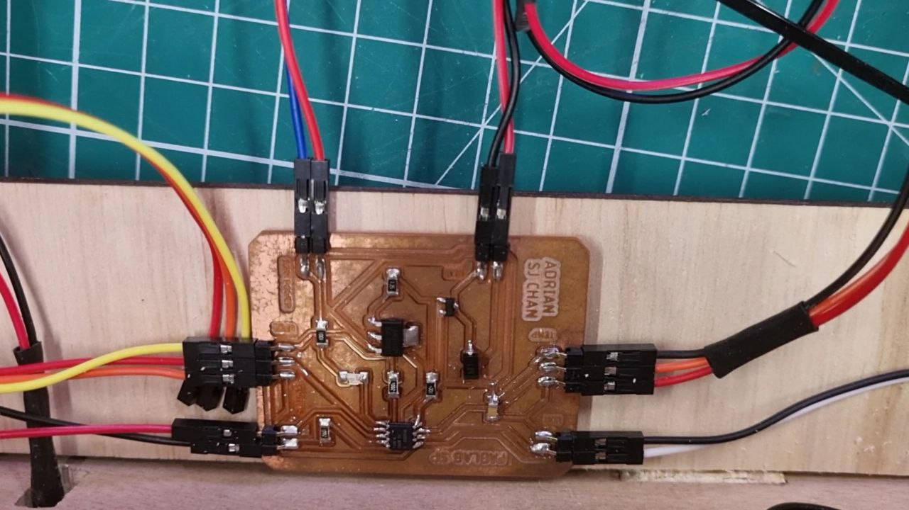

Here is the documentation of my final project! This project is the product of the skillsets I learnt here at Digital Fabrications!
Here is a link to my Presentation Slide and Video about my project!
Before my project started I wanted to make something that would be a great additional gadget to my everyday life. It needed to be something that I would come across everyday and it would improve the ergonormics of how I could use it. Thus I started to think of items I used everyday; my phone, my bedside alarm clock and my laptop. For my phone I mostly use it on the go due to its ease of mobility thus there was no need to make an additional stand or gadget for it. For my bedside alarm clock, I was thinking to make a bedside table intergrated with an alarm clock that would serve as a double function allowing me to place my glasses and phone on it while I aleep. However due to the space constraints of my room I had to hold off that idea. Lastly, for my laptop I use it everyday for prolonged hours watching my lecture videos and typing my assignments, thus I wanted to make a laptop stand that would display my laptop screen at my eye level and put my laptop keyboard at a position that would allow my hands to feel comfortable. Therefore, I started planning by sketching out some ideas!
For my laptop it can get really hot at certain times so I decided to incorporate a fan in the stand that would turn on when it senses that the laptop is at a certain temperature. In addition to that I wanted to add in thhe following features as well:
After sketching it out and getting the general plan out, I consulted Mr Chew, my lecturer to see the feasibility of it. He went through the components I wanted to add one by one. Fist off, the fan would be controlled by the temperature probe which can be used by a DHT11, LM35 or a Thermistor. Next the laptop detection can be sensed by capacitance sensor, a light dependant resistor or a light promixity sensor. The LED strips and study light both can be coded neopixles. The master swtich can be a slide swtich and lastly, the LCD/OLED display can be put in the front to indicate the laptop temperature and indicate if a laptop is detected.
However due to the time constraint I had to cut down on some of the features. Nevertheless, Mr Chew assured me that if I would like to continue I could do so after the semester and come in during my holidays to fix it up! Hence, after cutting down on the features here is what I was left with to build!
After identifying the components I want to incorporate into my project I started to draft out my PCB design on Eagle. Before I did so, I enquired Mr Chew again on how best I can desgin the circuit and what is required of the components available. Due to the amount of inputs and output devices I had, I decided to use a Tiny412 chip, similar to the one I used last term. First off the fan, it is a 12V fan, however, my circuit board could only run at 5V. Thus, I had to incorporate a regulator to recieve 12V and output 5V for the rest of the PCB. In addition to that, I needed a way for the IC Chip to communicate with the fan to actuate on command. Hence I added a mosfet, a mosfet controls conductivity, or how much electricity can flow, between its source and drain terminals based on the amount of voltage applied to its gate terminal. Next up was the LM 35 temperature probe. For the probe it was fairly easy, upon searching it up online, I did not need any resistors, I could connect its Vout straight to my Tiny412. Next up it was my laptop detection, the LDR. The LDR needed a resistor to vary the resistance differances so that the IC Chip is able to differentiate if a laptop is there or not. Following that was the LED for laptop indication, this was also an easy step as I had connected an LED before for last term, it simply needed a resitor as well. Next it was the master switch, I wanted a swtich that was flexible in coding where it could be interchangable for other functions if I wanted it to. Therefore, it was connected to a digital port on the Tiny412. Lastly, it was the DC port, it had to recieve 12V of DC power and it must transmit the voltage to the regulator and the fan. Below was the schematic drafted in Eagle.
As the footprints of the resistors were the same throughout I didnt need to worry about the values of the resistors. However nevertheless, I still put the values so that identification of the components would be easy during soldering. In addition to the mosfet, I needed to add in a diode to the fan to ensure residual voltages flow out of the circuit during opration. Addionally, I had to take note of the regulator in the schematic. The regulator AMS 1117 3.3 only has a output of 3.3V, thus I changed the regualtor type to an AMS 1117 5.0, this variant will give a 5V output. Following the schematic, I went over to the board tab to generate my board layout. This process took pretty long as it was difficult to find a board configuration that would have 100% traces connection. The auto route function was having trouble generating traces that connected to all the components. After a few dozen tries managed to get a connection, this was possible as I moved the components around. Below is a picture of the board layout.
Following the design I exported the png image of the traces and the outline in monochrome and I altered both images in gimp. Below are the images of it.
After getting the images I ran the images thru mods and managed to generate its g-codes using the same parameters as last term:
The settings for traces are:
The settings for outline are:
Upon generating the g-code I spotted some anomalies in the cutting path as some traces were not cut properly. Resulting in a short circuit between traces and pads. Below was some examples.
I went into Eagle and positioned the traces further away from each other manually. Fortunately, it all turned out great after generating the g-code! Now it was on to milling, milling the board was a fairly simple but long process just like last term! However this time the cutting took much longer as my design was bigger and it was much more intricate, causing the tool path to be more complicated. Below is shows the milling process, look at this closeup shot with the FabLab name!
After milling the PCB it was time to solder on the components! This part needed much concentration and steady hands, slowly but surely I did it!
After my board was done it was time to test out its functions and the codes that instruct it to run. For this part I needed to use an Arduino Uno to test out my sensors. This was important as I needed to get the right code and voltages that the various sensors were sending in the output. I needed it as my tiny412 had no more digital ports for my TX and RX pins. Below is a video of the Arduino Uno and my PCB both testing out the LDR, upon testing the LDR I noticed that I needed to use a 10k Ohm resistor as my previous 1k Ohm did not provide enough voltage variations to differentiate between a laptop dectection or not. Following that I wrote a code that would differentiate the voltage between a dectection or not. If laptop is on, the voltage is below 2.5 and the LED turns on.
Next up it was the temperature sensor, I needed to obtain the values at which it can trigger the fan to turn on. Before I could do that I needed to configure the final code on how I can read the temperatures. Thus, I connected the LM35 to the Arduino Uno and found out how to obtain the temperature. From its datasheet, LM35 produces 0mV at 0 Degress C and at every Degree C increase it produces additional 10mV. Thus, I coded the LM35 on the arduino uno to test out generating it temperatures measured. Below is a video of me testing the LM35 with hot air blown at it.
Here is the code for the LM35 sensor:
Next it was adding in all the components and coding the PCB according to how I want it. First off there would be a master swtich that would override all the conditions. If its on the PCB senses laptop detection and temperature. If its off then none of the sensors or actuators will work. Next it is the laptop detection. If the laptop is detected and temperature is above the threshold the LED turns on and the fan turns on. However if the laptop is not sensed the LED will not turn on and the fan will not turn on even if the temperature exceeds its threshold temperature. Below is the main code!
#define ldr 0
#define temp 1
#define fan 2
#define led 3
#define swtich 4
const float q = 5.0 / 1024; //ldr constant
int code; //ldr code
float volts; //ldr voltage
const float s = 5.0 / 1024; //temp constant
int tcode; //temp code
float tvolts; //temp voltage
float t; //temp (degree C)
void setup() {
pinMode(temp, INPUT);
pinMode(fan, OUTPUT);
pinMode(led, OUTPUT);
pinMode(swtich, INPUT);
}
// led high -- on
// swtich low -- on
// ldr < 2.5v -- object over
//if swtich-on, laptop on --- (led on)
//if swtich-on, laptop-on, temp-high --- (led on, fan on)
//if swtich-on, laptop-on, temp-low --- (led on, fan off)
//if swtich-on, laptop-off (led off)
//if swtich-off (all off)
void loop() {
code = analogRead(ldr); //ldr code read
volts = code * q; //ldr voltage calculation
tcode = analogRead(temp); //temp code read
tvolts = tcode * s; //temp voltage calculation
t = (tvolts)/0.01; //temp calculation (0 DegreeC = 0mV, 10mV/DegreeC)
if (digitalRead(swtich) == LOW) //overwrite swtich (on)
{
if (volts < 2.5) //laptop detection (below 2.5V, laptop on)
{
digitalWrite(led, HIGH);
if(t > 30) //temp detection (above 30 DegreeC, high)
{
digitalWrite(fan, HIGH);
}
else digitalWrite(fan, LOW);
}
else {
digitalWrite(led, LOW);
digitalWrite(fan, LOW);
}
}
else {
digitalWrite(led, LOW);
digitalWrite(fan, LOW);
}
}
After my electronics was in shape I needed to make the structure. Below is the Laptop Stand structure I designed in Fusion360. The structure needed to be fabricated in 2 parts where the main structure is manufactured by milling and the PCB mount, fan mount and top mesh is fabricated by laser cutting. I decided it this way as the latter parts didnt need to be of the same thickness of the main structure thus a 5mm piece of plywood is sufficient. Below is a 3D model of the whole structure.
The above 3D design was designed parametically so that if the thickness changed it would be easy to change the dimensions of the design without changing them one by one. Follwing the design, I exported the vectors and cut out the main structure on the Veratil cnc router in T11C. Similar to the 2D cnc coffee table I did a few weeks back, I generated the g-code for the structure using VCarve Pro and manufactured the structure. This time I used a 3mm end mill tool as I needed to cut slots that are 5mm thick, this was for the various component mounts and top mesh of my laptop stand.
Following this I went to fabricate the PCB mount, fan mount and top mesh for the rest of my structure. This part was simple as I have done it before in the previous module EP1000. I added a FabLab logo at the PCB mount as well! Below is a video of the process!
Now it was time for the final assembly and intergration of electronics. Firstly, I had to smoothen and deburr the cut products from the cnc router and the laser cutting machine. I used a sander to smoothen out the edges and the subsequent surfaces so that overall there was a really nice surface finish. Next, I had to use the power drill to drill some holes for my master swtich and my DC port. On top of the drills, I had to use diamond files to get it to the right shape I wanted. Below is the tools I used to drill the holes.
Next up, it was the mounting of the 12V DC fan, I used M4 screws and nuts to securely fasten my fan to the mount and it was a perfect fit! In the picture below you can see the fan mounted and the master swtich mounted on as well!
Following the fan mount, it was time to assemble the structure. This part was slightly difficult as the joining tabs where a tight fit. Therefore I used a rubber mallet to secure it in. Below is a picture of the whole structure coming together after I got all the parts into place! A nice fit for my laptop:)
Next, it was time to integrate my electronics into the structure. I used double sided tape to secure my PCB onto the PUB mount and I connected the various connections to the respective pins. Luckily I milled the names of the ports onto the board and the placement of the wiring worked well!
Lastly, It was time to load in the code I wrote eariler and it worked just fine! Now my project is fully functional and ready! The temperature threshold can be adjusted thru the arduino code, but for now I have set it at 30 degree C.

I would like to thank Mr Chew and the staff in FabLab for helping and guiding throughout this module. This module posed many different challenges for me and getting through it would not be possible if it was not for them!
Click here to return back to the main page!!
{kind=link}